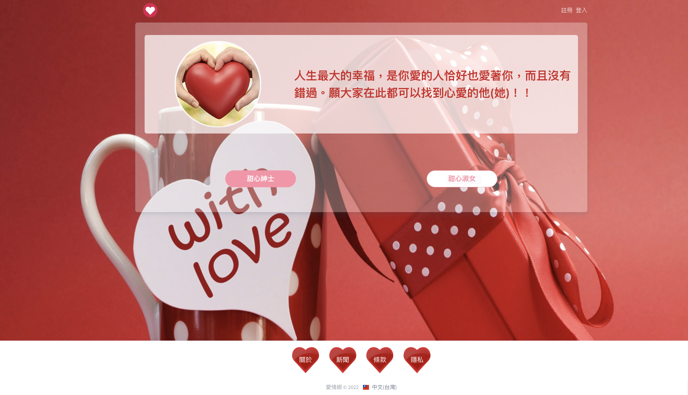
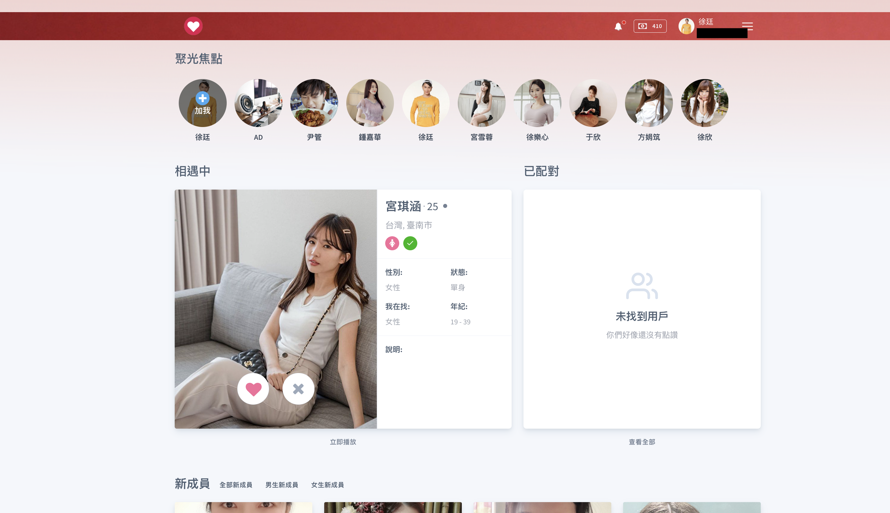
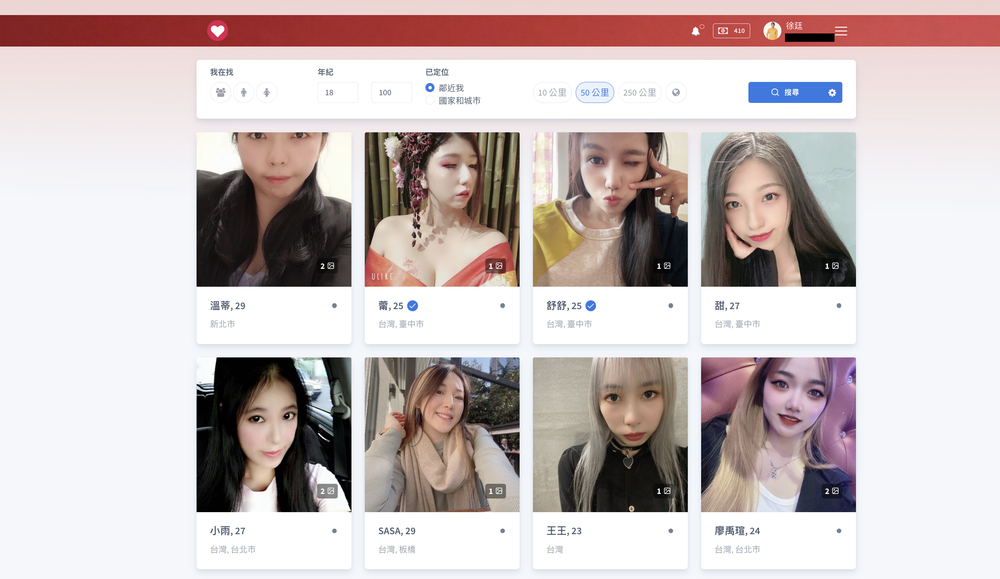
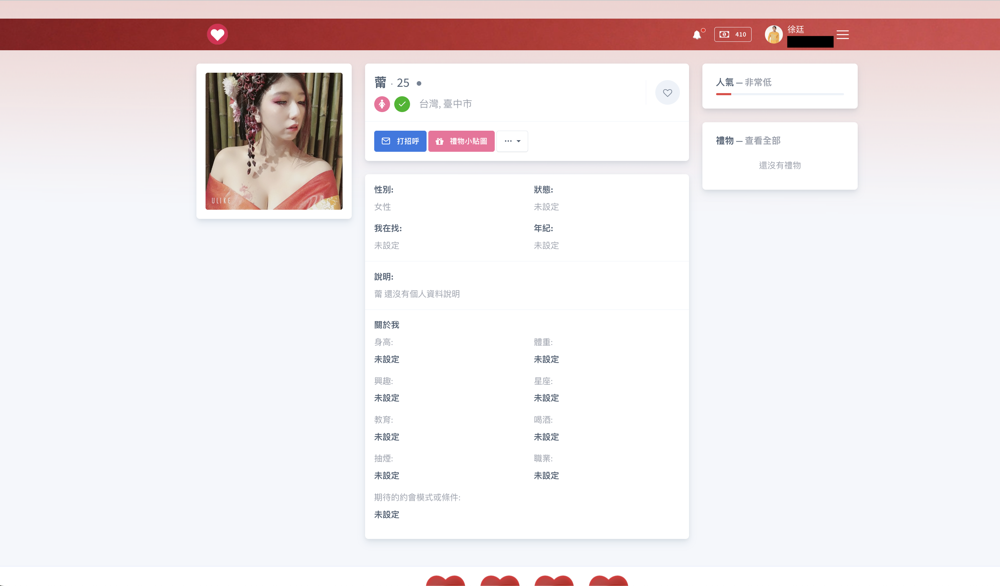
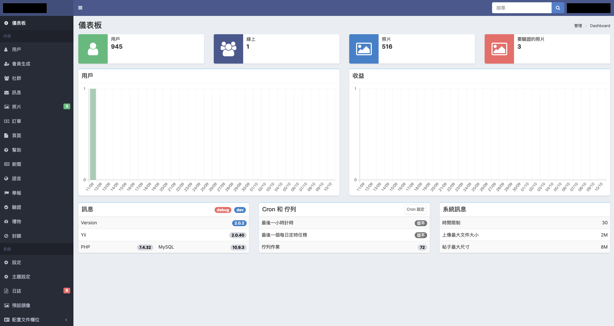
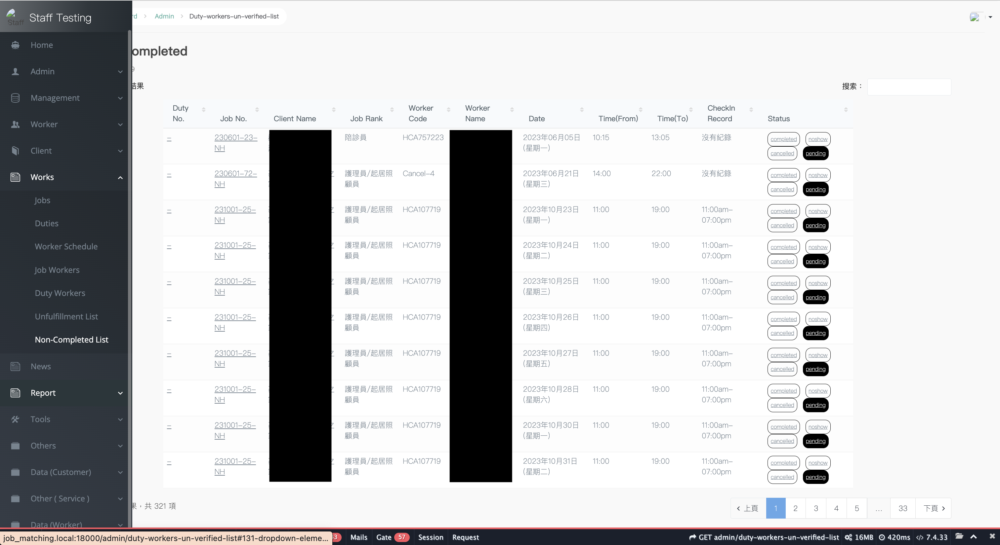
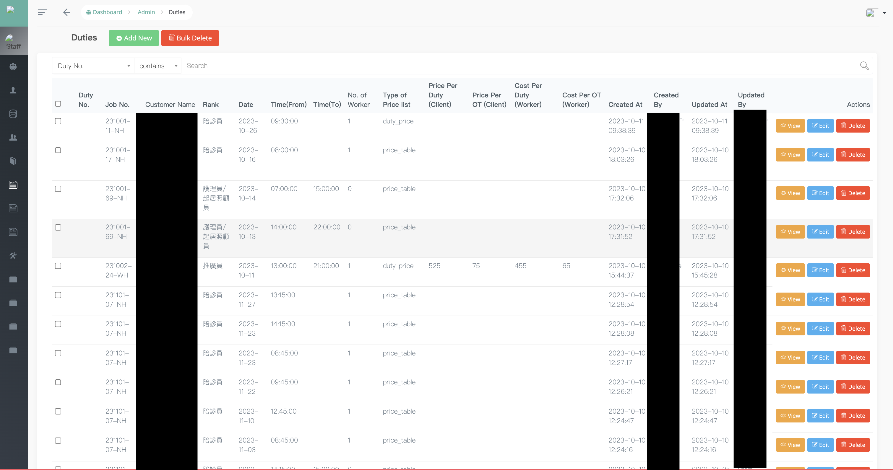
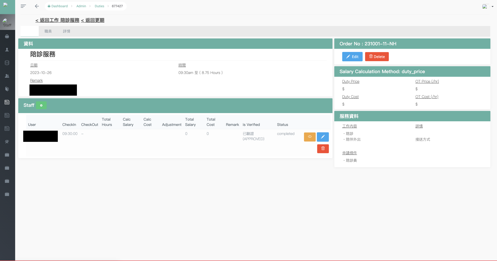
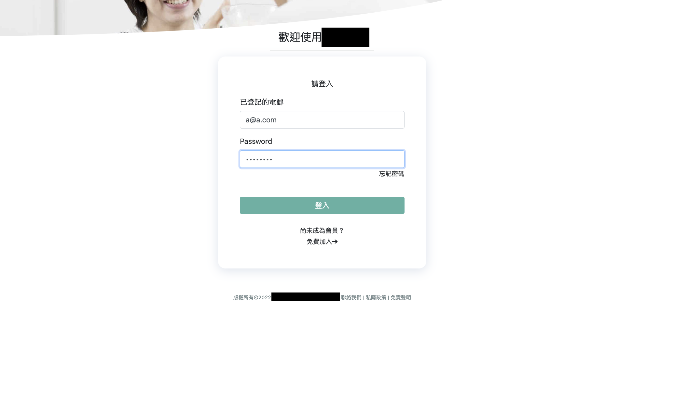
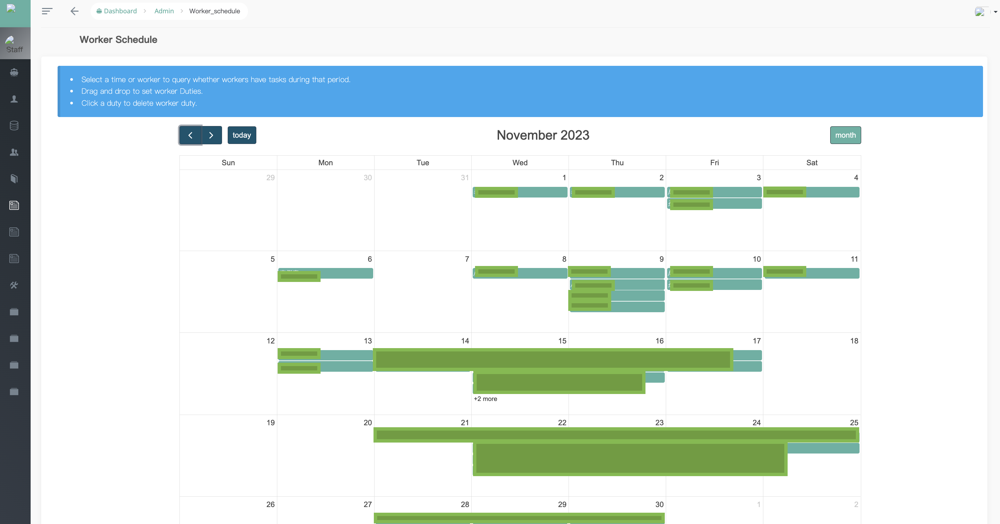

Mark Sun
技術專長
- 程式設計類：Python、PHP、R、JavaScript
- 後端框架: Yii2、Laravel、Flask、Django、FastApi
- 前端框架: Vue JS、React JS
- 資料庫：MySQL、MariaDB、PostgreSQL、SQLite
- 開發、運維、版控工具：vscode、PHPStorm、DroneCI、GitLab
工作經歷
昊盈資訊有限公司 後端工程師 2022.07 - 至今
- 維護就有系統
- 重新開發現有系統，將 ThinkPHP 以 Pure PHP 的方式進行開發
- 利用 python 開發財經資訊爬蟲系統
- 維護線上伺服器之運作
- 與 PM、PD、客戶溝通，將客戶需求規劃與現有系統架構做出對應的解決方案
- 在職期間使用技術：golang、chi、bun、gRPC、postgresql、clickhouse、datadog、mongodb。
- 使用golang整合現有php專案傳遞影片封包、後台後端api、使用open api製作開發文件。
- 後台 : 使用者操作報表系統開發
- 使用testfixtusers搭配golang test單元測試api，有效抓出80%以上潛在問題。
庫平有限公司 PHP 軟體研發工程師 2021.03 - 2022.06
- 後台管理系統功能維護/擴充 (Yii2)。
- VueJS 2 客戶端頁面套版。
- 使用 Workerman 開發即時聊天室。
- 依照市場需求製作對應報表。
- 利用 Telegram 監控 server 網路狀態、自動化上傳 Android & iOS app 至阿里雲 OSS 服務。
- 串接第三方遊戲、金流 Api。
育學雲端股份有限公司 PHP & Wordpress 工程師 2020.06 - 2020.10
- 使用 Laravel 開發公司內部行銷管理系統。
- 利用 Wordpress 架設公司行銷系統。
中央研究院 人文社會科學研究中心 實習生 2018.06 - 2019.10
- 使用 Laravel、jQuery 做 資料下載平台 (院內內部使用)。
- 導入 Git 以及 Python ORM (SQLAlchemy)，以方便爬蟲維護以及資料處理。
- 利用 R 做簡單機器學習和資料清理與分析。
- 使用 php (PHP Simple HTML DOM Parser、HTTP_REQUEST2) 抓取各大醫院資料 (等代推床人數、等代推床人數、等待加護病床人數…etc)。
- 使用 asyncio、scrapy 抓取含有 Angular 或是含有大量資料以及訪問次數限制網站之資料，並使用 Flask 製作進度平台觀察爬蟲進度。
作品
愛情網
該服務使用 Nginx、PHP 7.4、MariaDB、Memcache、Yii 2.0 開發。
服務內容包含，照片分享(用戶能選擇觀看者須贊助後才能觀看)、用戶推薦(女性用戶喜歡男性後才能發訊息)、觀看附近的人、即時聊天(ajax)、發送禮物、支付系統(藍星支付、Stripe、PayPal)、後台管理系統、檢舉封鎖系統、支援多語系。
    
派遣系統
該服務使用 Nginx、PHP 7.4、MySQL5.7、Laravel 8，前端使用 Vue Js 以及 FullCalendar JS 開發。
服務內容包含：
1.業主
- 工作、職責張貼
- 工人時間表(月曆)
- 工人工作指派、上工簽到、簽退
- 報表系統
2. 工人
- 工作職缺清單
- 簽到、簽退、排班
    